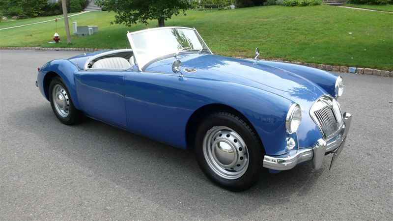
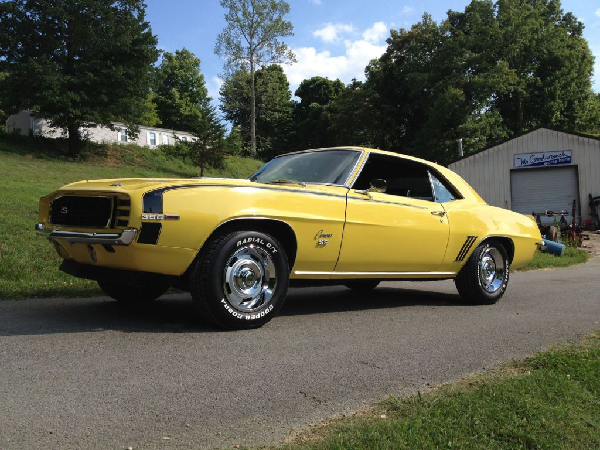

Words on Restoration...
 
Auto Restoration is an amazing hobby that required time and dedication but the end result is a unique and incredible experience and object. Taking an old car that looks beat up and runs poorly and fixing it up into the car pictured above is a fulfilling endeavor. Learning to restore cars is no easy feat, but for those of you who like to learn how things work, this can be the perfect hobby for you!.
Restorers completely rebuild powertrains; perform simple and advanced sheetmetal rust-ectomies; rebuild suspension and steering, carburetors, electrical systems, transmissions, electro-mechanical devices like distributors and alternators (and their brackets), and hydraulic systems like power steering and brakes; and tackle that job at which I so consistently flop: paint and body. In this age of niche specialties, that’s a lot of expertise for one hobbyist to have. But today it has become so common that when an owner-restored car shows up at a show or cruise night, we don’t even bat an eye. If you look at just the last 20 or so years, maybe it’s not remarkable. But if you expand your gaze to years and decades prior to that, the notion that one man can restore an automobile top to bottom, bumper to bumper, is incredible. I contend that it is extraordinary. It is commendable, inspirational, and unprecedented in human history.
Take a realistic approach and a holistic view before you embark on the project of restoring the antique car. Shop around, do research and prepare a realistic budget over time to bring about a positive result.
And remember... Enjoy it!